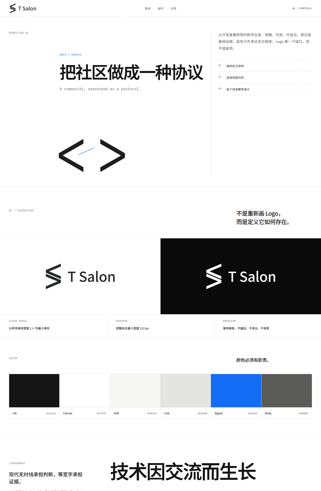
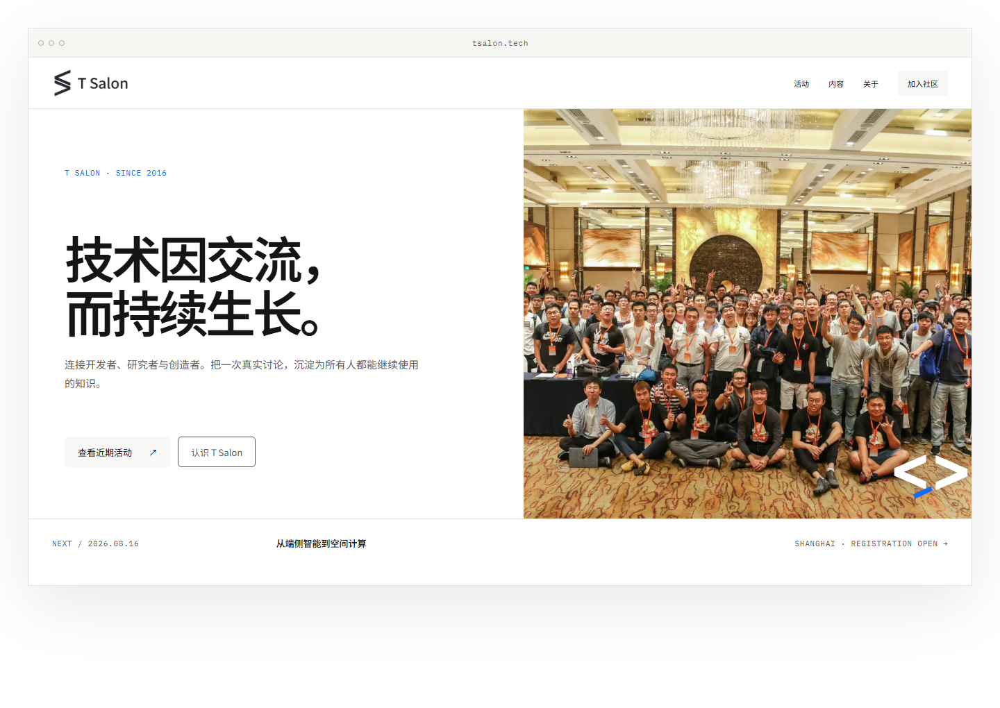
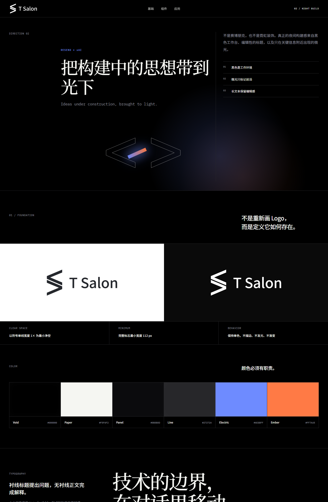
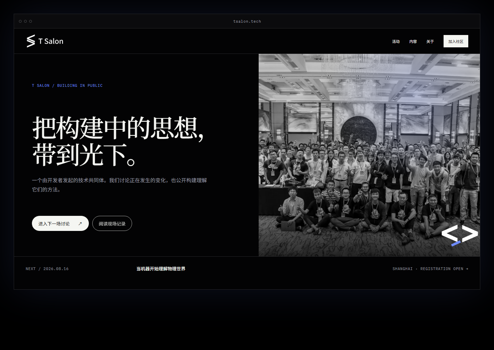
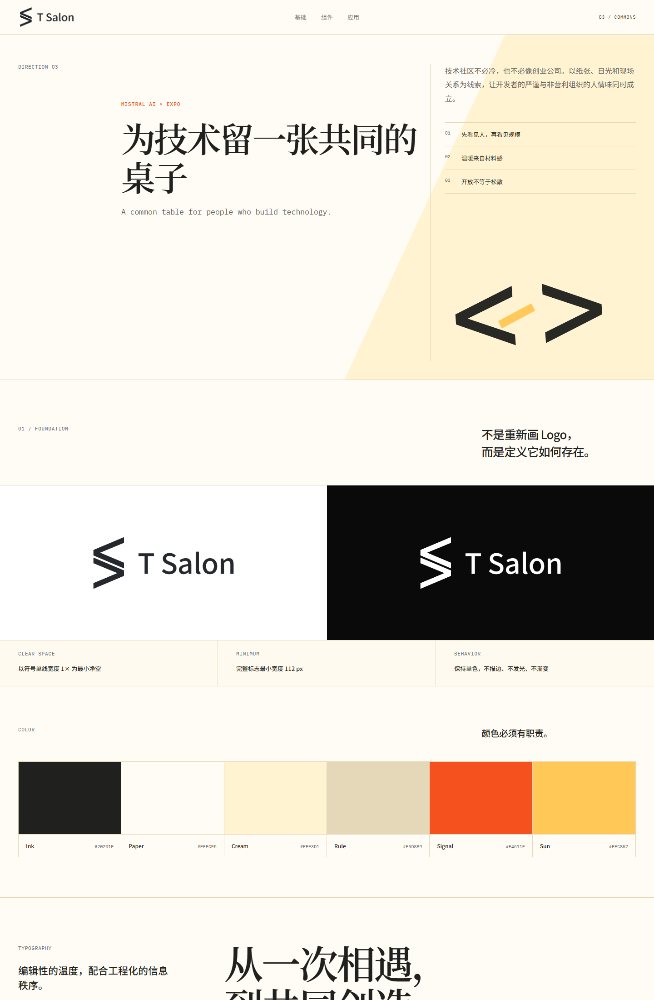
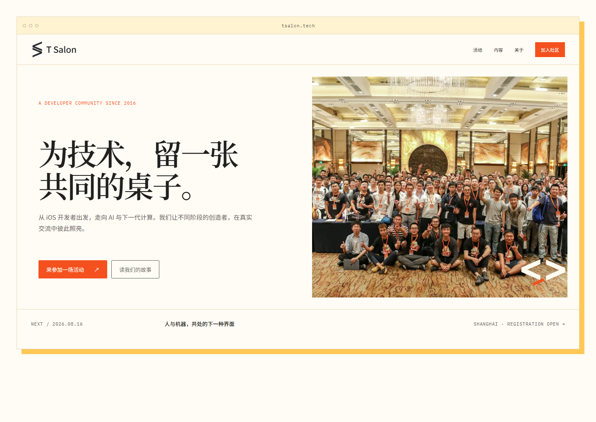

HOW TO REVIEW
先判断哪一种“像我们”，再讨论局部喜好。每套都可以进入完整规范页，查看色彩、字体、间距、活动、文章、照片与首页组件。






这不是三张情绪图，而是三套能继续长成完整官网的视觉语言：从 Logo 规则，到内容组件，再到首页真实应用。
先判断哪一种“像我们”，再讨论局部喜好。每套都可以进入完整规范页，查看色彩、字体、间距、活动、文章、照片与首页组件。





